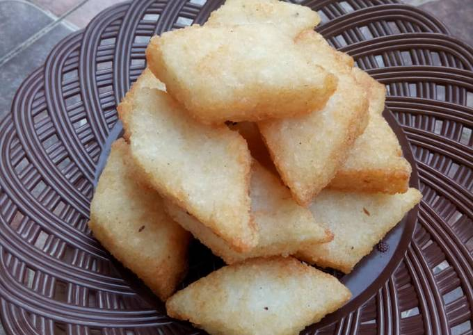

Produk Potensi Desa Gendereh
Berbagai produk unggulan dan potensi ekonomi Desa Gendereh

Penghasil Padi
Lahan sawah produktif dengan hasil panen padi berkualitas, sehingga menjadi produk unggulan desa gendereh.

Pembuatan Ulen
Kue tradisional khas Sunda yang terbuat dari bahan-bahan alami berkualitas, seperti tepung ketan, gula merah, dan sedikit santan yang membuat teksturnya lembut dan kenyal.

Pembuatan Opak
Opak merupakan makanan ringan khas Sunda yang terbuat dari beras ketan pilihan, Opak tersedia dalam berbagai rasa, termasuk original, manis, dan asin.